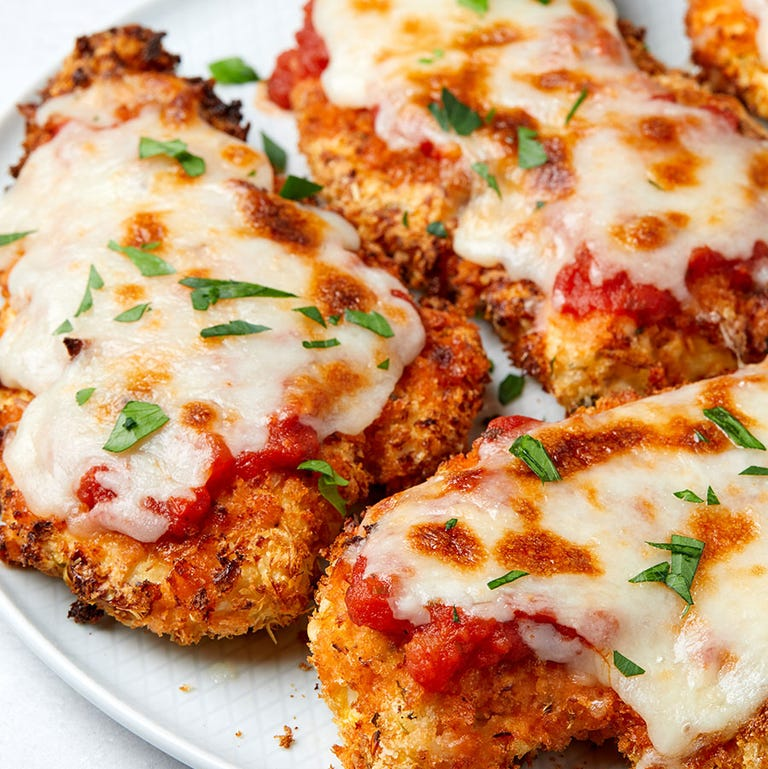

Air Fryer Chicken Parmesan

About this delicious recipe
Are we even surprised? By now we already know the air fryer is supreme. The fact that crispy golden chicken can be achieved without the use of any oil
whatsoever is amazing and that's not to mention how quickly the air fryer can do it! There's no need to turn on your oven or make a whole oily mess on
your stovetop: This chicken parm tastes every bit as good as the traditional version with much less effort to get there.
The air fryer will even melt and broil your cheese for a perfectly cheesy, crispy bite! Just 10 minutes to cook and 3 minutes more to toast the cheese
and you will never look back. This recipe is a time- and energy-saver, especially if it's hot out. Looking for more low-effort ideas? We've got you
covered with easy, summer-friendly dinners.
Ingredients
- 2 large boneless chicken breasts
- Kosher salt
- Freshly ground black pepper
- 1/3 c. all-purpose flour
- 2 large eggs
- 1 c. panko bread crumbs
- 1/4 c. freshly grated Parmesan
- 1 tsp. dried oregano
- 1/2 tsp. garlic powder
- 1/2 tsp. crushed red pepper flakes
- 1 c. marinara sauce
- 1 c. shredded mozzarella
- Freshly chopped parsley, for garnish
Steps
- Carefully butterfly chicken by cutting in half widthwise to create 4 thin pieces of chicken. Season both sides with salt and pepper.
- Prepare dredging station: Place flour in a shallow bowl and season with a large pinch of salt and pepper. Place eggs in a second bowl
and beat until smooth. In a third bowl, combine bread crumbs, Parmesan, oregano, garlic powder, and red pepper flakes.
- Working with one piece of a chicken at a time, coat in flour and shake off excess, dip in eggs, then finally press into
panko mixture, making sure both sides are coated well.
- Placing in a single layer and working in batches as necessary, add chicken to basket of air fryer and cook at 400° for 5 minutes on
each side. Top chicken with sauce and mozzarella and cook at 400° until cheese is melty and golden, about 3 minutes.
- Garnish with parsley before serving.
Back to the Main Page